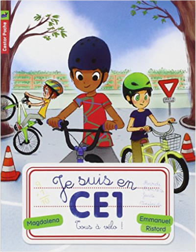

Books
Movies
Albums
Videogames
Games
BD
BD Camille
Blu-ray
Business
Camille
Comics
Cooking
Lego
Manga
Pauline
Photography
Sport
Star Wars
T'choupi
Travel
TV Shows
Un livre dont vous êtes le héro
Vinyl
Walt Disney
7
8
9
10
11
agent secret par accident
tom mc laughlin
les mystères romains : les secrets de pompéi
caroline lawrence
l'appel de la forêt
jack london
le rossignol
philip maes, koen brandt, paul wauters
je suis en ce1, tome 1 : premier jour de classe
magdalena, emmanuel ristord
je suis en ce1, tome 2 : à la bibliothèque
magdalena, emmanuel ristord
je suis en ce1, tome 3 : la photo de classe
magdalena, emmanuel ristord
je suis en ce1, tome 4 : une dent perdue
magdalena, emmanuel ristord
je suis en ce1, tome 5 : le potager de l'école
magdalena, emmanuel ristord
je suis en ce1, tome 6 : allez les champions !
magdalena, emmanuel ristord
je suis en ce1, tome 7 : au poney-club
magdalena, emmanuel ristord

je suis en ce1, tome 8 : tous à vélo !
magdalena, emmanuel ristord
7
8
9
10
11


 Made with Delicious Library Made with Delicious Library
Made with Delicious Library Made with Delicious Library